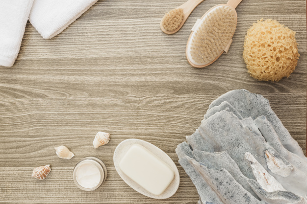

La misión
La fabricación y venta de Jabones Artesanales a base de aceites vegetales y aceites esenciales de glicerina vegetal, con aditivos naturales que nos conectan con la madre naturaleza y brindan bienestar a nuestro cuerpo.
Enfocarnos en brindar un producto de calidad, que satisfaga las necesidades del consumidor, brindando un buen servicio y atención en la venta de nuestros productos. Con las premisas de calidad, crear conciencia del tipo de productos que usamos para nuestro aseo y cuidado personal, el jabón natural es más que un objeto decorativo. Ofrecer a los consumidores un jabón suave para la piel, de rico aroma y elaborados con materiales hipo-alergénicos.
